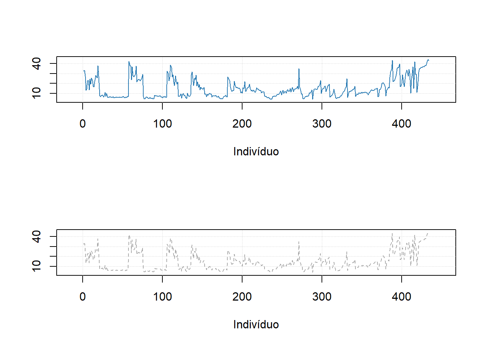
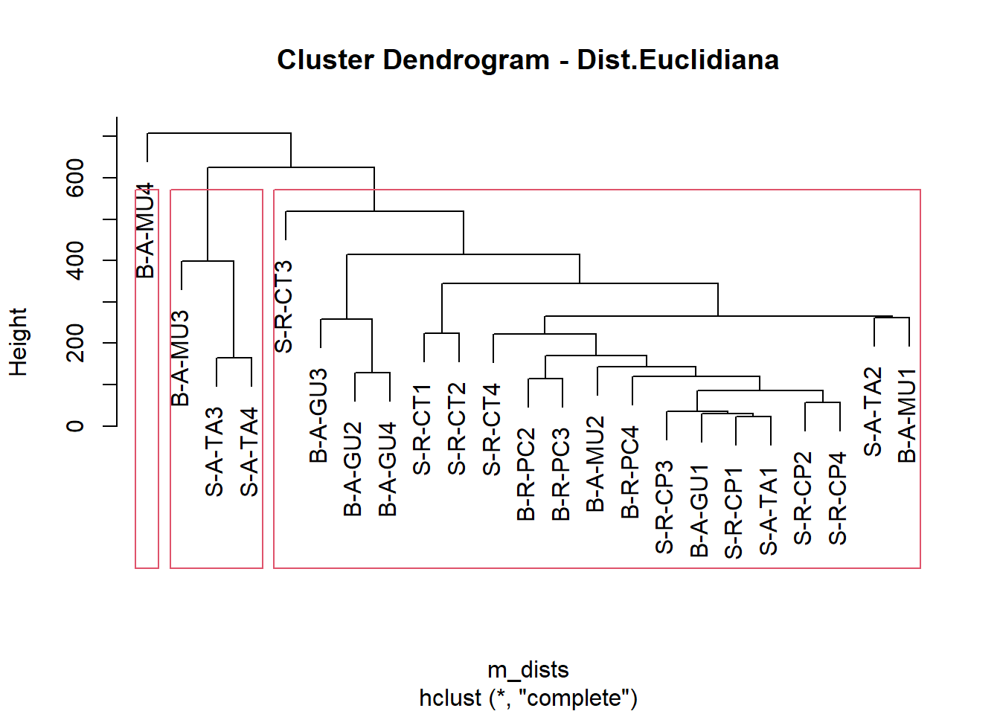

9 R Modulo 3.3 - Gráficos univariados
9.1 Sobre os dados
Considere os dados merísticos (ou médições morfológicas) da espécie de peixe Cichla ocellaris (tucunaré amarelo) do reservatório da barragem de Gramame, PB (Medeiros and Rosa 1994) (Figura 9.1). Existem 421 medições do comprimemto total (CT), comprimento padrão (CP) e peso total (PT), além do sexo (MACHO, FÊMEA ou imaturo), e outros descritores da estrutura populacional da espécie, um conjunto de dados formidável.

Figura 9.1: Dados merísticos da espécie de peixe Cichla ocellaris (tucunaré amarelo) do reservatório da barragem de Gramame, PB.
9.2 Organização básica
dev.off() #apaga os graficos, se houver algum
rm(list=ls(all=TRUE)) #limpa a memória
cat("\014") #limpa o console Instalando os pacotes necessários para esse módulo
install.packages("mdatools")library(openxlsx)## Warning: package 'openxlsx' was built under R version 4.3.2Os códigos acima, são usados para instalar e carregar os pacotes necessários para este módulo. Esses códigos são comandos para instalar pacotes no R. Um pacote é uma coleção de funções, dados e documentação que ampliam as capacidades do R (R CRAN (RN2774?) e RStudio (RN358?)). No exemplo acima, o pacote openxlsx permite ler e escrever arquivos Excel no R. Para instalar um pacote no R, você precisa usar a função install.packages().
Depois de instalar um pacote, você precisa carregá-lo na sua sessão R com a função library(). Por exemplo, para carregar o pacote openxlsx, você precisa executar a função library(openxlsx). Isso irá permitir que você use as funções do pacote na sua sessão R. Você precisa carregar um pacote toda vez que iniciar uma nova sessão R e quiser usar um pacote instalado.
Agora vamos definir o diretório de trabalho. Esse código é usado para obter e definir o diretório de trabalho atual no R. O comando getwd() retorna o caminho do diretório onde o R está lendo e salvando arquivos. O comando setwd() muda esse diretório de trabalho para o caminho especificado entre aspas. No seu caso, você deve ajustar o caminho para o seu próprio diretório de trabalho. Lembre de usar a barra “/” entre os diretórios. E não a contra-barra “\”.
getwd()
setwd("C:/Seu/Diretório/De/Trabalho")9.3 Importando a planilha
Vamos importar a planilha de dados univariados univ*.xlsx. Note que o símbolo # em programação R significa que o texto que vem depois dele é um comentário e não será executado pelo programa. Isso é útil para explicar o código ou deixar anotações. Ajuste a segunda linha do código abaixo para refletir “C:/Seu/Diretório/De/Trabalho/Planilha.xlsx”.
library(openxlsx)
univ_all <- read.xlsx("D:/Elvio/OneDrive/Disciplinas/_EcoNumerica/5.Matrizes/univ.xlsx",
rowNames = T, colNames = T,
sheet = "tucuna")
head(univ_all,10)
head(univ_all[, 1:5], 10)## CT_cm PT_g CP_cm Ctubo_cm PC_g %PT Pest_g Cest_cm gr_est ir_est
## TU001 32.4 468.8 27.2 39.8 458.9 2.111775 3.9 7.7 I 0.8319113
## TU002 33.4 520.0 28.8 14.3 507.4 2.423077 5.9 10.0 I 1.1346154
## TU003 27.3 301.5 23.8 13.0 283.4 6.003317 15.5 10.2 III 5.1409619
## TU004 13.2 28.2 11.0 16.5 27.7 1.773050 0.3 4.3 I 1.0638298
## TU005 14.3 38.9 11.9 15.5 37.7 3.084833 0.8 4.5 III 2.0565553
## TU006 22.7 431.7 20.5 24.2 418.7 3.011350 9.9 6.4 III 2.2932592
## TU007 23.2 544.0 19.2 25.0 520.1 4.393382 6.8 7.5 II 1.2500000
## TU008 13.5 161.6 11.5 17.5 157.0 2.846535 4.1 6.8 II 2.5371287
## TU009 24.6 200.5 20.5 25.7 195.9 2.294264 2.5 7.6 II 1.2468828
## TU010 19.4 86.7 16.0 18.3 84.5 2.537486 0.7 5.1 I 0.8073818
## Pint_g Cint_cm gr_int ir_int Pgon_g Cgon_cm emg ig
## TU001 4.8 38.3 II 1.0238908 1.2 7 IMATURO 0.25597270
## TU002 5.3 13.3 II 1.0192308 1.4 6.5 MADURO 0.26923077
## TU003 2.4 12.0 II 0.7960199 0.2 7.7 EM MATURACAO 0.06633499
## TU004 0.1 16.0 II 0.3546099 0.1 5 IMATURO 0.35460993
## TU005 0.3 15.0 II 0.7712082 0.1 3.2 IMATURO 0.25706941
## TU006 2.7 23.7 II 0.6254343 0.4 7.8 EM MATURACAO 0.09265694
## TU007 3.3 24.5 II 0.6066176 13.8 7.9 MADURO 2.53676471
## TU008 0.4 17.0 I 0.2475248 0.1 2.5 IMATURO 0.06188119
## TU009 2.0 25.3 II 0.9975062 0.1 6.5 EM MATURACAO 0.04987531
## TU010 1.4 17.7 II 1.6147636 0.1 6 IMATURO 0.11534025
## mes periodo estação sexo
## TU001 ago chuvoso inverno MACHO
## TU002 ago chuvoso inverno MACHO
## TU003 ago chuvoso inverno MACHO
## TU004 ago chuvoso inverno MACHO
## TU005 ago chuvoso inverno MACHO
## TU006 set chuvoso inverno MACHO
## TU007 set chuvoso inverno FEMEA
## TU008 set chuvoso inverno imaturo
## TU009 set chuvoso inverno MACHO
## TU010 set chuvoso inverno MACHO
## CT_cm PT_g CP_cm Ctubo_cm PC_g
## TU001 32.4 468.8 27.2 39.8 458.9
## TU002 33.4 520.0 28.8 14.3 507.4
## TU003 27.3 301.5 23.8 13.0 283.4
## TU004 13.2 28.2 11.0 16.5 27.7
## TU005 14.3 38.9 11.9 15.5 37.7
## TU006 22.7 431.7 20.5 24.2 418.7
## TU007 23.2 544.0 19.2 25.0 520.1
## TU008 13.5 161.6 11.5 17.5 157.0
## TU009 24.6 200.5 20.5 25.7 195.9
## TU010 19.4 86.7 16.0 18.3 84.5Exibindo os dados importados (esses comando são “case-sensitive” ignore.case(object)).
#View(univ)
print(univ_all[1:5,1:5])
univ_all
str(univ_all)
mode(univ_all)
class(univ_all)9.5 Gráficos de dispersão
(https://mda.tools/docs/datasets--simple-plots.html)
library(mdatools)
#removendo linhas ou coluns por nome
attr(univ, "name") = "Tucunaré"
attr(univ, "xaxis.name") = "Eixo X"
attr(univ, "yaxis.name") = "Eixo Y"
par(mfrow = c(1,2))
# show plot for the whole dataset (columns 1 and 2 will be taken)
mdaplot(univ, type = "p")
# subset the dataset and keep only columns 6 and 7 and then make a plot
mdaplot(mda.subset(univ, select = c(1,2)), type = "p")
par(mfrow = c(2,2))
# show Height vs Weight and color points by the Beer consumption
mdaplot(univ, type = "p", cgroup = univ_all[, var])
# do the same but do not show colorbar
mdaplot(univ, type = "p", cgroup = univ_all[, var],
show.colorbar = FALSE)
# do the same but use grayscale color map
mdaplot(univ, type = "p", cgroup = univ_all[, var], colmap = "gray")
# do the same but using colormap with gradients between red, yellow and green colors
mdaplot(univ, type = "p", cgroup = univ_all[, var],
colmap = c("red", "yellow", "green"))
# make a factor using values of variable Sex and define labels for the factor levels
g <- factor(univ_all[, "sexo"],
levels = c("MACHO", "FEMEA", "imaturo"))
g
par(mfrow = c(1, 2))
mdaplot(univ, type = "p", cgroup = g)
mdaplot(univ, type = "p", cgroup = g, colmap = "gray")
par(mfrow = c(1, 2))
# default way - color grouping is used for borders and "bg" for background
mdaplot(univ, type = "p", cgroup = univ_all[, var], pch = 21, bg = "white")
# inverse - color grouping is used for background and "bg" for border
mdaplot(univ, type = "p", cgroup = univ_all[, var], pch = 21, bg = "white", pch.colinv = TRUE)
par(mfrow = c(2, 2))
# by default row names will be used as labels
mdaplot(univ, type = "p", show.labels = TRUE)
# here we tell to use indices as labels instead
mdaplot(univ, type = "p", show.labels = TRUE, labels = "indices")
# here we use names again but change color and size of the labels
mdaplot(univ, type = "p", show.labels = TRUE, labels = "names", lab.col = "red", lab.cex = 0.5)
# finally we provide a vector with manual values to be used as the labels
mdaplot(univ, type = "p", show.labels = TRUE, labels = paste0("T", seq_len(nrow(univ))))
par(mfrow = c(2, 2))
# manual values and tick labels for the x-axis
mdaplot(univ, xticks = c(10,30,40), xticklabels = c("Small", "Medium", "Large"))
# same but with rotation of the tick labels
mdaplot(univ, xticks = c(10,30,40), xticklabels = c("Small", "Medium", "Large"), xlas = 2)
# manual values and tick labels for the y-axis
mdaplot(univ, yticks = c(200,600,900), yticklabels = c("Light", "Medium", "Heavy"))
# same but with rotation of the tick labels
mdaplot(univ, yticks = c(200,600,900), yticklabels = c("Light", "Medium", "Heavy"), ylas = 2)
par(mfrow = c(1, 2))
# change margin for bottom part
par(mar = c(6, 4, 4, 2) + 0.1)
mdaplot(univ, xticks = c(10,30,40),
xticklabels = c("Small", "Medium", "Large"),
xlas = 2, xlab = "")
mtext("Comprimento", side = 1, line = 5)
# change margin for left part
par(mar = c(5, 6, 4, 1) + 0.1)
mdaplot(univ, yticks = c(200,600,900), yticklabels = c("Light", "Medium", "Heavy"),
ylas = 2, ylab = "")
mtext("Peso", side = 2, line = 5)
par(mfrow = c(1,2))
mdaplot(univ, show.grid = FALSE, show.lines = c(20,200))
mdaplot(univ, show.lines = c(40, NA))
# define a factor using values of variable Sex and simple labels
g
par(mfrow = c(1, 2))
# make a scatter plot grouping points by the factor and then show convex hull for each group
p <- mdaplot(univ, cgroup = g)
plotConvexHull(p)
# make a scatter plot grouping points by the factor and then show 90% confidence intervals
p <- mdaplot(univ, cgroup = g)
plotConfidenceEllipse(p, conf.level = 0.90)
# média agrupada por fator
media <- tapply(univ$CT_cm, g, mean)
media
anova <- aov(CT_cm ~ g, data = univ_all)
summary(anova)
plot(anova,1)9.6 Gráficos de linha
library(mdatools)## Warning: package 'mdatools' was built under R version 4.3.3var <- univ$CT_cm
attr(univ$CT_cm, "yaxis.name") = "CT_cm"
attr(univ$CT_cm, "xaxis.name") = "Indivíduo"
par(mfrow = c(2, 1))
mdaplot(univ$CT_cm, type = "l")
mdaplot(univ$CT_cm, type = "l", col = "darkgray", lty = 2)
#mdaplot(univ$CT_cm, type = "l", cgroup = g)9.7 Gráficos de barra
# make a simple two rows matrix with values
d = rbind(
c(20, 50, 60, 90),
c(14, 45, 59, 88)
)
# add some names and attributes
colnames(d) = paste0("PC", 1:4)
rownames(d) = c("Cal", "CV")
attr(d, "xaxis.name") = "Components"
attr(d, "name") = "Explained variance"
par(mfrow = c(1, 2))
# make a default bar plot
mdaplot(d, type = "h")
# make a bar plot with manual xtick labels, color and labels for data values
mdaplot(d, type = "h", xticks = seq_len(ncol(d)), xticklabels = colnames(d), col = "red",
show.labels = TRUE, labels = "values", xlas = 2, xlab = "", ylab = "Variance, %")
d = rbind(
c(20, 60, 70, 75),
c(2, 5, 4, 3)
)
# add names and attributes
rownames(d) = c("Mean", "Std")
colnames(d) = paste0("PC", 1:4)
attr(d, 'name') = "Statistics"
# show the plots
par(mfrow = c(1, 2))
mdaplot(d, type = "e")
mdaplot(d, type = "e", xticks = seq_len(ncol(d)),
xticklabels = colnames(d), col = "red", xlas = 2, xlab = "")
par(mfrow = c(1, 2))
mdaplot(mda.subset(d, 1), type = "h", col = "lightgray")
mdaplot(d, type = "e", show.axes = FALSE, pch = NA)
mdaplot(mda.subset(d, 1), type = "b")
mdaplot(d, type = "e", show.axes = FALSE)
9.8 Gráficos de grupos
# let's create a simple dataset with 3 rows
p = rbind(
c(0.40, 0.69, 0.88, 0.95),
c(0.34, 0.64, 0.81, 0.92),
c(0.30, 0.61, 0.80, 0.88)
)
# add some names and attributes
rownames(p) = c("Cal", "CV", "Test")
colnames(p) = paste0("PC", 1:4)
attr(p, "name") = "Cumulative variance"
attr(p, "xaxis.name") = "Components"
# and make group plots of different types
par(mfrow = c(2, 2))
mdaplotg(p, type = "l")
mdaplotg(p, type = "b")
mdaplotg(p, type = "h", xticks = 1:4)
mdaplotg(p, type = "b", lty = c(1, 2, 1), col = c("red", "green", "blue"), pch = 1,
xticks = 1:4, xticklabels = colnames(p))
par(mfrow = c(2, 2))
mdaplotg(p, type = "l", legend.position = "top")
mdaplotg(p, type = "b", legend.position = "bottomleft")
mdaplotg(p, type = "h", legend.position = "bottom")
mdaplotg(p, type = "b", show.legend = FALSE)
par(mfrow = c(2, 2))
mdaplotg(p, type = "l", show.labels = TRUE)
mdaplotg(p, type = "b", show.labels = TRUE, labels = "indices")
mdaplotg(p, type = "h", show.labels = TRUE, labels = "values")
mdaplotg(p, type = "b", show.labels = TRUE, labels = "values")
# load data and exclude column with income
data(people)
people = mda.exclcols(people, "Income")
# use values of sex variable to split data into two subsets
sex = people[, "Sex"]
m = mda.subset(people, subset = sex == -1)
f = mda.subset(people, subset = sex == 1)
# combine the two subsets into a named list
d = list(male = m, female = f)
# make plots for the list
par(mfrow = c(2, 2))
mdaplotg(d, type = "p")
mdaplotg(d, type = "b")
mdaplotg(d, type = "h")
mdaplotg(d, type = "b", lty = c(1, 2), col = c("red", "blue"), pch = 1)
sex = factor(people[, "Sex"], labels = c("M", "F"))
reg = factor(people[, "Region"], labels = c("S", "M"))
groups = data.frame(sex, reg)
par(mfrow = c(2, 2))
mdaplotg(people, type = "p", groupby = groups)
mdaplotg(people, type = "l", groupby = groups)
mdaplotg(people, type = "b", groupby = groups)
mdaplotg(people, type = "h", groupby = groups)
Sites consultados
https://www.geeksforgeeks.org/break-axis-of-plot-in-r/ https://stackoverflow.com/questions/72498597/add-a-break-to-a-bar-chart-when-one-value-is-very-large